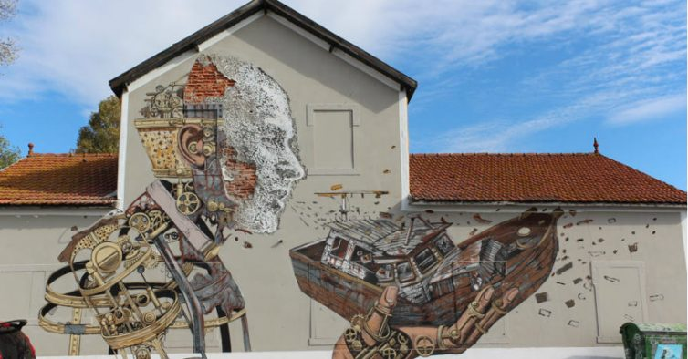

Vills
Born in Lisbon in 1987. He completed his studies in 2008 at the University of the Arts in London.
Portuguese artist Alexandre Farto (b. 1987) has been interacting visually with the urban environment under the name of Vhils since his days as a prolific graffiti writer in the early- to mid-2000s.

Vhils grew up in Seixal, an industrialised suburb across the river from Lisbon, the capital of Portugal, and was deeply influenced by the transformations brought on by the intensive urban development
the country underwent in the 1980s and 1990s.
He was particularly inspired by the way city walls absorb the social and historical changes that take place around them. Applying his original methods of creative destruction, Vhils digs into the surface
layers of our material culture like a contemporary urban archaeologist, exposing what lies beyond the superficiality of things, making visible the invisible and restoring meaning and beauty to the
discarded dimensions buried beneath.
Since 2005, he has presented his work in over 30 countries around the world in solo and group exhibitions, site-specific art interventions, artistic events and projects in various contexts – from working
with communities in the favelas of Rio de Janeiro, to collaborations with reputed art institutions such as the EDP Foundation (Lisbon), Centre Pompidou (Paris), Barbican Centre (London), CAFA Art Museum
(Beijing), or the Museum of Contemporary Art San Diego (San Diego), among others. An avid experimentalist, Vhils has been developing his personal aesthetics in a plurality of media besides his signature
carving technique: from stencil painting to metal etching, from pyrotechnic explosions and video to sculptural installations. He has also directed several music videos, short films, and one stage production.
